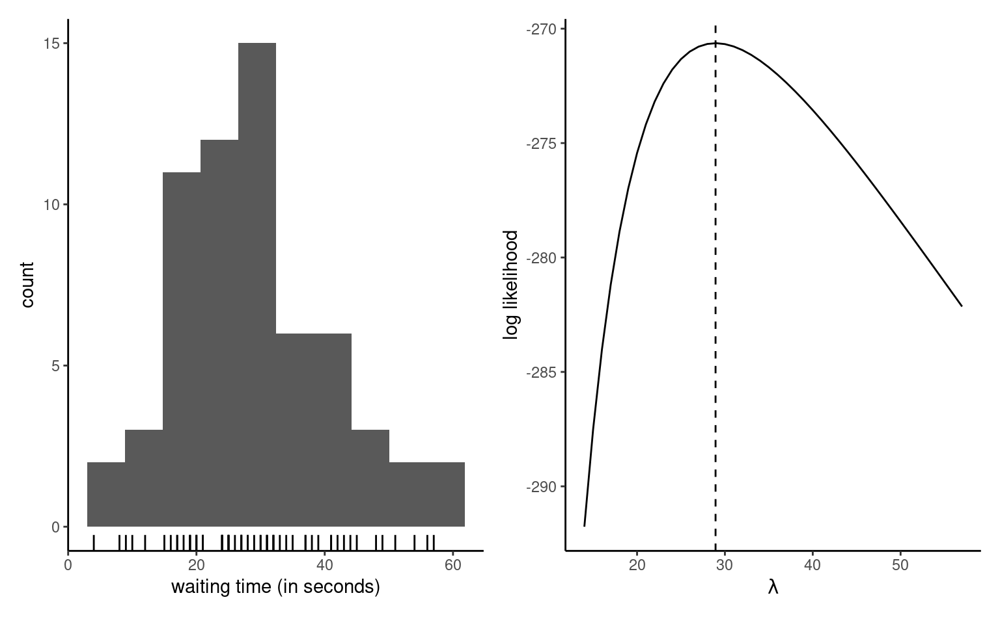
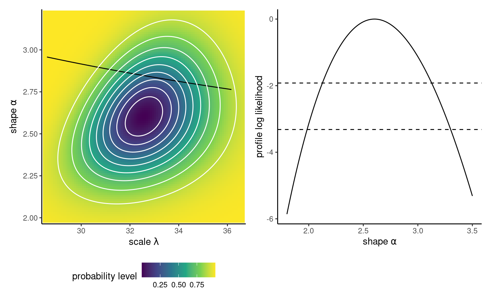

Likelihood-based inference
This chapter is dedicated to the basics of statistical modelling using likelihood-based inference, arguably the most popular estimation paradigm in statistics.
A statistical model starts with the specification of a data generating mechanism. We postulate that the data has been generated from a probability distribution with \(p\)-dimensional parameter vector \(\boldsymbol{\theta}\). The sample space is the set in which the \(n\) vector observations lie, while the parameter space \(\boldsymbol{\Theta} \subseteq \mathbb{R}^p\) is the set in which the parameter takes values.
As motivating example, consider the time a passenger must wait at the Edouard-Montpetit station if that person arrives at 17:59 sharp every weekday, just in time for the metro train. The measurements in waiting represent the time in seconds before the next train leaves the station. The data were collected over three months and can be treated as an independent sample. The left panel of Figure 1 shows an histogram of the \(n=62\) observations, which range from \(4\) to \(57\) seconds. The data are positive, so our model must account for this feature.
Example 1 (Exponential model for waiting times) To model the waiting time, we may consider for example an exponential distribution with scale \(\lambda\) ?@def-exponentialdist, which represents the theoretical mean. Under independence1, the joint density for the observations \(y_1, \ldots, y_n\) is \[\begin{align*} f(\boldsymbol{y}) = \prod_{i=1}^n f(y_i) =\prod_{i=1}^n \lambda^{-1} \exp(- y_i/\lambda) = \lambda^{-n} \exp\left(- \sum_{i=1}^n y_i/\lambda\right) \end{align*}\] The sample space is \(\mathbb{R}_{+}^n = [0, \infty)^n\), while the parameter space is \((0, \infty)\).
To estimate the scale parameter \(\lambda\) and obtain suitable uncertainty measures, we need a modelling framework. We turn to likelihood-based inference.
Maximum likelihood estimation
For any given value of \(\boldsymbol{\theta}\), we can obtain the probability mass or density of the sample observations, and we use this to derive an objective function for the estimation.
Definition 1 (Likelihood) The likelihood \(L(\boldsymbol{\theta})\) is a function of the parameter vector \(\boldsymbol{\theta}\) that gives the probability (or density) of observing a sample under a postulated distribution, treating the observations as fixed, \[\begin{align*} L(\boldsymbol{\theta}; \boldsymbol{y}) = f(\boldsymbol{y}; \boldsymbol{\theta}), \end{align*}\] where \(f(\boldsymbol{y}; \boldsymbol{\theta})\) denotes the joint density or mass function of the \(n\)-vector containing the observations.
If the latter are independent, the joint density factorizes as the product of the density of individual observations, and the likelihood becomes \[\begin{align*} L(\boldsymbol{\theta}; \boldsymbol{y})=\prod_{i=1}^n f_i(y_i; \boldsymbol{\theta}) = f_1(y_1; \boldsymbol{\theta}) \times \cdots \times f_n(y_n; \boldsymbol{\theta}). \end{align*}\] The corresponding log likelihood function for independent and identically distributions observations is \[\begin{align*} \ell(\boldsymbol{\theta}; \boldsymbol{y}) = \sum_{i=1}^n \log f(y_i; \boldsymbol{\theta}) \end{align*}\]
Example 2 (Dependent data) The joint density function only factorizes for independent data, but alternative sequential decompositions can be helpful. For example, we can write the joint density \(f(y_1, \ldots, y_n)\) using the factorization \[\begin{align*} f(\boldsymbol{y}) = f(y_1) \times f(y_2 \mid y_1) \times \ldots f(y_n \mid y_1, \ldots, y_n) \end{align*}\] in terms of conditional. Such a decomposition is particularly useful in the context of time series, where data are ordered from time \(1\) until time \(n\) and models typically relate observation \(y_n\) to it’s past. For example, the \(\textsc{ar}(1)\) process, states that \(Y_t \mid Y_{t-1}=y_{t-1} \sim \mathsf{normal}(\alpha + \beta y_{t-1}, \sigma^2)\) and we can simplify the log likelihood using the Markov property, which states that the current realization depends on the past, \(Y_t \mid Y_1, \ldots, Y_{t-1}\), only through the most recent value \(Y_{t-1}\). The log likelihood thus becomes \[\begin{align*} \ell(\boldsymbol{\theta}) = \log f(y_1) + \sum_{i=2}^n f(y_i \mid y_{i-1}). \end{align*}\]
Definition 2 (Maximum likelihood estimator) The maximum likelihood estimator \(\widehat{\boldsymbol{\theta}}\) is the vector value that maximizes the likelihood, \[\begin{align*} \widehat{\boldsymbol{\theta}} = \mathrm{arg max}_{\boldsymbol{\theta} \in \boldsymbol{\Theta}} L(\boldsymbol{\theta}; \boldsymbol{y}). \end{align*}\]
The natural logarithm \(\log\) is a monotonic transformation, so the maximum likelihood estimator \(\boldsymbol{\theta}\) for likelihood \(L(\boldsymbol{\theta}; \boldsymbol{y})\) is the same as that of the log likelihood \(\ell(\boldsymbol{\theta}; \boldsymbol{y}) = \log L(\boldsymbol{\theta}; \boldsymbol{y})\).2
If we suppose that our model is correct, than we expect to observe whatever was realized, so we find the parameter vector that makes the sample the most likely to have been generated by our model.
We can resort to numerical optimization routines to find the value of the maximum likelihood estimate, or sometimes derive closed-form expressions for the estimator, starting from the log likelihood. The right panel of Figure 1 shows the exponential log likelihood, which attains a maximum at \(\widehat{\lambda}=28.935\) second, the sample mean of the observations. The function decreases to either side of these values as the data become less compatible with the model. Given the values achieved here with a small sample, it is easy to see that direct optimization of the likelihood function (rather than it’s natural logarithm) could lead to numerical underflow, since already \(\exp(-270) \approx 5.5 \times 10^{-118}\), and log values smaller than \(-746\) would be rounded to zero.
Example 3 (Calculation of the maximum likelihood of an exponential distribution) As Figure 1 reveals that the exponential log likelihood function is unimodal and thus achieves a single maximum, we can use calculus to derive an explicit expression for \(\widehat{\lambda}\) based on the log likelihood \[\begin{align*} \ell(\lambda) = -n \log\lambda -\frac{1}{\lambda} \sum_{i=1}^n y_i. \end{align*}\] Taking first derivative and setting the result to zero, we find \[\begin{align*} \frac{\mathrm{d} \ell(\lambda)}{\mathrm{d} \lambda} = -\frac{n}{\lambda} + \frac{1}{\lambda^2} \sum_{i=1}^n y_i = 0. \end{align*}\] Rearranging this expression by taking \(-n/\lambda\) to the right hand side of the equality and multiplying both sides by \(\lambda^2>0\), we find that \(\widehat{\lambda} = \sum_{i=1}^n y_i / n\). The second derivative of the log likelihood is \(\mathrm{d}^2 \ell(\lambda)/\mathrm{d} \lambda^2 = n(\lambda^{-2} - 2\lambda^{-3}\overline{y})\), and plugging \(\lambda = \overline{y}\) gives \(-n/\overline{y}^2\), which is negative. Therefore, \(\widehat{\lambda}\) is indeed a maximizer.
Proposition 1 (Invariance of maximum likelihood estimators) If \(g(\boldsymbol{\theta}): \mathbb{R}^p \mapsto \mathbb{R}^k\) for \(k \leq p\) is a function of the parameter vector, then \(g(\widehat{\boldsymbol{\theta}})\) is the maximum likelihood estimator of the function.
The invariance property explains the widespread use of maximum likelihood estimation. For example, having estimated the parameter \(\lambda\), we can now use the model to derive other quantities of interest and get the “best” estimates for free. For example, we could compute the maximum likelihood estimate of the probability of waiting more than one minute, \(\Pr(T>60) = \exp(-60/\widehat{\lambda})= 0.126\), or using R built-in distribution function pexp.
# Note: default R parametrization for the exponential is
# in terms of rate, i.e., the inverse scale parameter
pexp(q = 60, rate = 1/mean(waiting), lower.tail = FALSE)
#> [1] 0.126Another appeal of the invariance property is the possibility to compute the MLE in the most suitable parametrization, which is convenient if the support is restricted. If \(g\) is a one-to-one function of \(\boldsymbol{\theta}\), for example if \(\theta >0\), taking \(g(\theta) = \log \theta\) or, if \(0 \leq \theta \leq 1\), by maximizing \(g(\theta) = \log(\theta) - \log(1-\theta) \in \mathbb{R}\) removes the support constraints for the numerical optimization.
Definition 3 (Score and information matrix) Let \(\ell(\boldsymbol{\theta})\), \(\boldsymbol{\theta} \in \boldsymbol{\Theta} \subseteq \mathbb{R}^p\), be the log likelihood function. The gradient of the log likelihood \(U(\boldsymbol{\theta}) = \partial \ell(\boldsymbol{\theta}) / \partial \boldsymbol{\theta}\) is termed score function.
The observed information matrix is the hessian of the negative log likelihood \[\begin{align*} j(\boldsymbol{\theta}; \boldsymbol{y})=-\frac{\partial^2 \ell(\boldsymbol{\theta}; \boldsymbol{y})}{\partial \boldsymbol{\theta} \partial \boldsymbol{\theta}^\top} \end{align*}\], evaluated at the maximum likelihood estimate \(\widehat{\boldsymbol{\theta}}\), so \(j(\widehat{\boldsymbol{\theta}})\). Under regularity conditions, the expected information, also called Fisher information matrix, is \[\begin{align*} i(\boldsymbol{\theta}) = \mathsf{E}\left\{U(\boldsymbol{\theta}; \boldsymbol{Y}) U(\boldsymbol{\theta}; \boldsymbol{Y})^\top\right\} = \mathsf{E}\left\{j(\boldsymbol{\theta}; \boldsymbol{Y})\right\} \end{align*}\] Both the Fisher (or expected) and the observed information matrices are symmetric and encode the curvature of the log likelihood and provide information about the variability of \(\widehat{\boldsymbol{\theta}}\).
Example 4 (Information for the exponential model) The observed and expected information of the exponential model for a random sample \(Y_1, \ldots, Y_n\), parametrized in terms of scale \(\lambda\), is \[\begin{align*} j(\lambda; \boldsymbol{y}) &= -\frac{\partial^2 \ell(\lambda)}{\partial \lambda^2} = \frac{n}{\lambda^{2}} + \frac{2}{n\lambda^{3}}\sum_{i=1}^n y_i \\ i(\lambda) &= \frac{n}{\lambda^{2}} + \frac{2}{n\lambda^{3}}\sum_{i=1}^n \mathsf{E}(Y_i) = \frac{n}{\lambda^{2}} \end{align*}\] since \(\mathsf{E}(Y_i) = \lambda\) and expectation is a linear operator. The observed information is \(j(\widehat{\lambda}) = n/\overline{y}^2\) and the Fisher information is \({n}/{\lambda^{2}}\): both coincide when evaluated at the maximum likelihood estimator \(\widehat{\lambda}=\overline{y}\) (i.e., the sample mean), but this isn’t the case in general.
Proposition 2 (Gradient-based optimization) To obtain the maximum likelihood estimator, we will typically find the value of the vector \(\boldsymbol{\theta}\) that solves the score vector, meaning \(U(\widehat{\boldsymbol{\theta}})=\boldsymbol{0}_p\). This amounts to solving simultaneously a \(p\)-system of equations by setting the derivative with respect to each element of \(\boldsymbol{\theta}\) to zero. If \(j(\widehat{\boldsymbol{\theta}})\) is a positive definite matrix (i.e., all of it’s eigenvalues are positive), then the vector \(\widehat{\boldsymbol{\theta}}\) is the maximum likelihood estimator.
We can use a variant of Newton–Raphson algorithm if the likelihood is thrice differentiable and the maximum likelihood estimator does not lie on the boundary of the parameter space. If we consider an initial value \(\boldsymbol{\theta}^{\dagger}\), then a first order Taylor series expansion of the score likelihood in a neighborhood \(\boldsymbol{\theta}^{\dagger}\) of the MLE \(\widehat{\boldsymbol{\theta}}\) gives \[\begin{align*}
\boldsymbol{0}_p & = U(\widehat{\boldsymbol{\theta}}) \stackrel{\cdot}{\simeq} \left.
\frac{\partial \ell(\boldsymbol{\theta})}{\partial \boldsymbol{\theta}} \right|_{\boldsymbol{\theta} = \boldsymbol{\theta}^{\dagger}} + \left.
\frac{\partial^2 \ell(\boldsymbol{\theta})}{\partial \boldsymbol{\theta} \partial \boldsymbol{\theta}^\top}\right|_{\boldsymbol{\theta} = \boldsymbol{\theta}^{\dagger}}(\widehat{\boldsymbol{\theta}} - \boldsymbol{\theta}^{\dagger})\\&=U(\boldsymbol{\theta}^{\dagger}) - j(\boldsymbol{\theta}^{\dagger})(\widehat{\boldsymbol{\theta}} - \boldsymbol{\theta}^{\dagger})
\end{align*}\] and solving this for \(\widehat{\boldsymbol{\theta}}\) (provided the \(p \times p\) matrix \(j(\widehat{\boldsymbol{\theta}})\) is invertible), we get \[\begin{align*}
\widehat{\boldsymbol{\theta}} \stackrel{\cdot}{\simeq} \boldsymbol{\theta}^{\dagger} +
j^{-1}(\boldsymbol{\theta}^{\dagger})U(\boldsymbol{\theta}^{\dagger}),
\end{align*}\] which suggests an iterative procedure from a starting value \(\boldsymbol{\theta}^{\dagger}\) in the vicinity of the mode until the gradient is approximately zero. If the value is far from the mode, then the algorithm may diverge to infinity. To avoid this, we may multiply the term \(j^{-1}(\boldsymbol{\theta}^{\dagger})U(\boldsymbol{\theta}^{\dagger})\) by a damping factor \(c<1\). A variant of the algorithm, termed Fisher scoring, uses the expected or Fisher information \(i(\boldsymbol{\theta})\) in place of the observed information, \(j(\boldsymbol{\theta})\), for numerical stability and to avoid situations where the latter is not positive definite. This is the optimization routine used in the glm function in R.
The exponential model may be restrictive for our purposes, so we consider for the purpose of illustration and as a generalization a Weibull distribution.
Definition 4 (Weibull distribution) The distribution function of a Weibull random variable with scale \(\lambda>0\) and shape \(\alpha>0\) is \[\begin{align*} F(x; \lambda, \alpha) &= 1 − \exp\left\{−(x/\lambda)^\alpha\right\}, \qquad x \geq 0, \lambda>0, \alpha>0, \end{align*}\] while the corresponding density is \[\begin{align*} f(x; \lambda, \alpha) &= \frac{\alpha}{\lambda^\alpha} x^{\alpha-1}\exp\left\{−(x/\lambda)^\alpha\right\}, \qquad x \geq 0, \lambda>0, \alpha>0. \end{align*}\] The quantile function, the inverse of the distribution function, is \(Q(p) = \lambda\{-\log(1-p)\}^{1/\alpha}\). The Weibull distribution includes the exponential as special case when \(\alpha=1\). The expected value of \(Y \sim \mathsf{Weibull}(\lambda, \alpha)\) is \(\mathsf{E}(Y) = \lambda \Gamma(1+1/\alpha)\).
Example 5 (Maximum likelihood of a Weibull sample) The log likelihood for a simple random sample whose realizations are \(y_1, \ldots, y_n\) of size \(n\) from a \(\mathsf{Weibull}(\lambda, \alpha)\) model is \[\begin{align*}
\ell(\lambda, \alpha) = n \log(\alpha) - n\alpha\log(\lambda) + (\alpha-1) \sum_{i=1}^n \log y_i - \lambda^{-\alpha}\sum_{i=1}^n y_i^\alpha.
\end{align*}\] The gradient of this function is easily obtained by differentiation3 \[\begin{align*}
\frac{\partial \ell(\lambda, \alpha)}{\partial \lambda} &= -\frac{n\alpha}{\lambda} +\alpha\lambda^{-\alpha-1}\sum_{i=1}^n y_i^\alpha \\
\frac{\partial \ell(\lambda, \alpha)}{\partial \alpha} &= \frac{n}{\alpha} - n \log(\lambda) + \sum_{i=1}^n \log y_i + \lambda^{-\alpha}\log(\alpha)\sum_{i=1}^n y_i^\alpha - \sum_{i=1}^n \left(\frac{y_i}{\lambda}\right)^{\alpha} \times\log\left(\frac{y_i}{\lambda}\right).
\end{align*}\] We turn to numerical optimization to obtain the maximum likelihood estimate of the Weibull distribution, in the absence of closed-form expression for the MLE. To this end, we create functions that encode the log likelihood, here taken as the sum of log density contributions. The function nll_weibull below takes as argument the vector of parameters, pars, and returns the negative of the log likelihood which we wish to minimize4 We also code the gradient, although we can resort to numerical differentiation at little additional costs. We then use optim, the default optimization routine in R, to minimize nll_weibull. The function returns a list containing a convergence code (0 indicating convergence), the MLE in par, the log likelihood \(\ell(\widehat{\boldsymbol{\theta}})\) and the Hessian matrix, which is the matrix of second derivatives of the negative log likelihood evaluated at \(\widehat{\boldsymbol{\theta}}\). The log likelihood surface, for pairs of scale and shape vectors \(\boldsymbol{\theta} = (\lambda, \alpha)\), are displayed in Figure 2. We can see that the maximum likelihood value has converged, and check that the score satisfies \(U(\widehat{\boldsymbol{\theta}}) = 0\) at the returned optimum value.
# Load data vector
data(waiting, package = "hecstatmod")
# Negative log likelihood for a Weibull sample
nll_weibull <- function(pars, y){
# Handle the case of negative parameter values
if(isTRUE(any(pars <= 0))){ # parameters must be positive
return(1e10) # large value (not infinite, to avoid warning messages)
}
- sum(dweibull(x = y, scale = pars[1], shape = pars[2], log = TRUE))
}
# Gradient of the negative Weibull log likelihood
gr_nll_weibull <- function(pars, y){
scale <- pars[1]
shape <- pars[2]
n <- length(y)
grad_ll <- c(scale = -n*shape/scale + shape*scale^(-shape-1)*sum(y^shape),
shape = n/shape - n*log(scale) + sum(log(y)) -
sum(log(y/scale)*(y/scale)^shape))
return(- grad_ll)
}
# Use exponential submodel MLE as starting parameters
start <- c(mean(waiting), 1)
# Check gradient function is correctly coded!
# Returns TRUE if numerically equal to tolerance
isTRUE(all.equal(numDeriv::grad(nll_weibull, x = start, y = waiting),
gr_nll_weibull(pars = start, y = waiting),
check.attributes = FALSE))
#> [1] TRUE
# Numerical minimization using optim
opt_weibull <- optim(
par = start, # starting values
fn = nll_weibull, # pass function, whose first argument is the parameter vector
gr = gr_nll_weibull, # optional (if missing, numerical derivative)
method = "BFGS", # gradient-based algorithm, common alternative is "Nelder"
y = waiting, # vector of observations, passed as additional argument to fn
hessian = TRUE) # return matrix of second derivatives evaluated at MLE
# Alternative using pure Newton
# nlm(f = nll_weibull, p = start, hessian = TRUE, y = waiting)
# Parameter estimates - MLE
(mle_weibull <- opt_weibull$par)
#> [1] 32.6 2.6
# Check gradient for convergence
gr_nll_weibull(mle_weibull, y = waiting)
#> scale shape
#> 0.0000142 0.0001136
# Is the Hessian of the negative positive definite (all eigenvalues are positive)
# If so, we found a maximum and the matrix is invertible
isTRUE(all(eigen(opt_weibull$hessian)$values > 0))
#> [1] TRUE

waiting data, with white contour curves given 10%, 20%, , 90% confidence sets. Higher log likelihood values are indicated by darker colors. The cross indicates the maximum likelihood estimate.
Sampling distribution
The sampling distribution of an estimator \(\widehat{\boldsymbol{\theta}}\) is the probability distribution induced by the underlying data, given that the latter inputs are random.
For simplicity, suppose we have a simple random sample, so the log likelihood is a sum of \(n\) terms and information accumulates linearly with the sample size: the data carry more information about the unknown parameter vector, whose true value we denote \(\boldsymbol{\theta}_0\). Under suitable regularity conditions, cf. Section 4.4.2 of @Davison:2003, for large sample size \(n\), we can perform a Taylor series of the score vector and apply the central limit theorem. Since \(U(\boldsymbol{\theta})\) and \(i(\boldsymbol{\theta})\) are the sum of \(n\) independent random variables, and that \(\mathsf{E}\{U(\boldsymbol{\theta})\}=\boldsymbol{0}_p\), and \(\mathsf{Var}\{U(\boldsymbol{\theta})\}=i(\boldsymbol{\theta})\), application of the central limit theorem yields \(i(\boldsymbol{\theta}_0)^{-1/2}U(\boldsymbol{\theta}_0) \stackrel{\cdot}{\sim}\mathsf{normal}(0,1)\). We can use this to obtain approximations to the sampling distribution of \(\widehat{\boldsymbol{\theta}}\) and also for the log likelihood ratio \[\begin{align*} R(\boldsymbol{\theta}_0)=2\{\ell(\widehat{\boldsymbol{\theta}}) - \ell(\boldsymbol{\theta}_0)\} \end{align*}\] where \(R(\boldsymbol{\theta}_0) \stackrel{\cdot}{\sim} \chi^2_p\).
As the sample size grows, the \(\widehat{\boldsymbol{\theta}}\) becomes centered around the value \(\boldsymbol{\theta}_0\) that minimizes the discrepancy between the model and the true data generating process. In large samples, the MLE estimator is approximately multivariate normal with
\[\begin{align*} \widehat{\boldsymbol{\theta}} \stackrel{\cdot}{\sim} \mathsf{normal}_p\{\boldsymbol{\theta}_0, i^{-1}(\boldsymbol{\theta})\} \end{align*}\] where the covariance matrix is the inverse of the Fisher information. In practice, since the true parameter value \(\boldsymbol{\theta}_0\) is unknown, we replace it with either \(i^{-1}(\widehat{\boldsymbol{\theta}})\) or the inverse of the observed information \(j^{-1}(\widehat{\boldsymbol{\theta}})\), as both of these converge to the true value.
Example 6 (Covariance matrix and standard errors for the Weibull distribution) We use the output of our optimization procedure to get the observed information matrix and the standard errors for the parameters of the Weibull model. The latter are simply the square root of the diagonal entries of the inverse Hessian matrix.
# The Hessian matrix of the negative log likelihood evaluated at the MLE
# is the inverse of the observed information matrix
obsinfo_weibull <- opt_weibull$hessian
vmat_weibull <- solve(obsinfo_weibull)
# Standard errors
se_weibull <- sqrt(diag(vmat_weibull))We can use this result to construct confidence intervals for parameters from \(\boldsymbol{\theta}\).
Proposition 3 (Asymptotic normality and transformations) The asymptotic normality result can be used to derive standard errors for other quantities of interest. If \(\phi = g(\boldsymbol{\theta})\), then \(\widehat{\phi} \stackrel{\cdot}{\sim}\mathsf{normal}(\phi_0, \mathrm{V}_\phi)\), with \(\mathrm{V}_\phi = \nabla \phi^\top \mathbf{V}_{\boldsymbol{\theta}} \nabla \phi\), where \(\nabla \phi=[\partial \phi/\partial \theta_1, \ldots, \partial \phi/\partial \theta_p]^\top\). The variance matrix and the gradient vector are evaluated at the maximum likelihood estimate \(\widehat{\boldsymbol{\theta}}\). This result readily extends to vector \(\boldsymbol{\phi} \in \mathbb{R}^k\) for \(k \leq p\).
Example 7 (Probability of waiting for exponential model.) To illustrate the difference between likelihood ratio and Wald tests (and their respective confidence intervals), we consider the metro waiting time data and consider the probability of waiting more than one minute, \(\phi=g(\lambda) = \exp(-60/\lambda)\). The maximum likelihood estimate is, by invariance, \(0.126\) and the gradient of \(g\) with respect to the scale parameter is \(\nabla \phi = \partial \phi / \partial \lambda = 60\exp(-60/\lambda)/\lambda^2\).
lambda_hat <- mean(waiting)
phi_hat <- exp(-60/lambda_hat)
dphi <- function(lambda){60*exp(-60/lambda)/(lambda^2)}
V_lambda <- lambda_hat^2/length(waiting)
V_phi <- dphi(lambda_hat)^2 * V_lambda
(se_phi <- sqrt(V_phi))
#> [1] 0.0331Likelihood-based tests
Oftentimes, we wish to compare two models: the model implied by the null hypothesis, which is a restriction or simpler version of the full model. Models are said to be nested if we can obtain one from the other by imposing restrictions on the parameters.
We consider a null hypothesis \(\mathscr{H}_0\) that imposes restrictions on the possible values of \(\boldsymbol{\theta}\) can take, relative to an unconstrained alternative \(\mathscr{H}_1\). We need two nested models: a full model, and a reduced model that is a subset of the full model where we impose \(q\) restrictions. For example, the full model could be a regression model with four predictor variables and the reduced model could include only the first two predictor variables, which is equivalent to setting \(\mathscr{H}_0: \beta_3=\beta_4=0\). The testing procedure involves fitting the two models and obtaining the maximum likelihood estimators of each of \(\mathscr{H}_1\) and \(\mathscr{H}_0\), respectively \(\widehat{\boldsymbol{\theta}}\) and \(\widehat{\boldsymbol{\theta}}_0\) for the parameters under \(\mathscr{H}_0\). The null hypothesis \(\mathscr{H}_0\) tested is: `the reduced model is an adequate simplification of the full model’ and the likelihood provides three main classes of statistics for testing this hypothesis: these are
- likelihood ratio tests statistics, denoted \(R\), which measure the drop in log likelihood (vertical distance) from \(\ell(\widehat{\boldsymbol{\theta}})\) and \(\ell(\widehat{\boldsymbol{\theta}}_0)\).
- Wald tests statistics, denoted \(W\), which consider the standardized horizontal distance between \(\widehat{\boldsymbol{\theta}}\) and \(\widehat{\boldsymbol{\theta}}_0\).
- score tests statistics, denoted \(S\), which looks at the scaled gradient of \(\ell\), evaluated only at \(\widehat{\boldsymbol{\theta}}_0\) (derivative of \(\ell\)).

The three main classes of statistics for testing a simple null hypothesis \(\mathscr{H}_0: \boldsymbol{\theta}=\boldsymbol{\theta}_0\) against the alternative \(\mathscr{H}_a: \boldsymbol{\theta} \neq \boldsymbol{\theta}_0\) are the likelihood ratio, the score and the Wald statistics, defined respectively as \[\begin{align*} R &= 2 \left\{ \ell(\widehat{\boldsymbol{\theta}})-\ell(\boldsymbol{\theta}_0)\right\}, \\ S &= U^\top(\boldsymbol{\theta}_0)i^{-1}(\boldsymbol{\theta}_0)U(\boldsymbol{\theta}_0), \\ W &= (\widehat{\boldsymbol{\theta}}-\boldsymbol{\theta}_0)^\top j(\widehat{\boldsymbol{\theta}})(\widehat{\boldsymbol{\theta}}-\boldsymbol{\theta}_0), \end{align*}\] where \(\widehat{\boldsymbol{\theta}}\) is the maximum likelihood estimate under the alternative and \(\boldsymbol{\theta}_0\) is the null value of the parameter vector. Asymptotically, all the test statistics are equivalent (in the sense that they lead to the same conclusions about \(\mathscr{H}_0\)). If \(\mathscr{H}_0\) is true, the three test statistics follow asymptotically a \(\chi^2_q\) distribution under a null hypothesis \(\mathscr{H}_0\), where the degrees of freedom \(q\) are the number of restrictions.
For scalar \(\theta\) with \(q=1\), signed versions of these statistics exist, e.g., \[\begin{align*} W(\theta_0)=(\widehat{\theta}-\theta_0)/\mathsf{se}(\widehat{\theta})\stackrel{\cdot}{\sim} \mathsf{normal}(0,1) \end{align*}\] for the Wald statistic or the directed likelihood root \[\begin{align*} R({\theta_0}) = \mathrm{sign}(\widehat{\theta}-\theta)\left[2 \left\{\ell(\widehat{\theta})-\ell(\theta)\right\}\right]^{1/2} \stackrel{\cdot}{\sim} \mathsf{normal}(0,1). \end{align*}\] The likelihood ratio test statistic is normally the most powerful of the three likelihood tests. The score statistic \(S\) only requires calculation of the score and information under \(\mathscr{H}_0\) (because by definition \(U(\widehat{\theta})=0\)), so it can be useful in problems where calculations of the maximum likelihood estimator under the alternative is costly or impossible.
The Wald statistic \(W\) is the most widely encountered statistic and two-sided 95% confidence intervals for a single parameter \(\theta\) are of the form \[\begin{align*} \widehat{\theta} \pm \mathfrak{z}_{1-\alpha/2}\mathrm{se}(\widehat{\theta}), \end{align*}\] where \(\mathfrak{z}_{1-\alpha/2}\) is the \(1-\alpha/2\) quantile of the standard normal distribution; for a \(95\)% confidence interval, the \(0.975\) quantile of the normal distribution is \(\mathfrak{z}_{0.975}=1.96\). The Wald-based confidence intervals are by construction symmetric: they may include implausible values (e.g., negative values for if the parameter of interest \(\theta\) is positive, such as variances). The Wald-based confidence intervals are not parametrization invariant: if we want intervals for a nonlinear continuous function \(g(\theta)\), then in general \(\mathsf{CI}_{W}\{g(\theta)\} \neq g\{\mathsf{CI}_{W}(\theta)\}.\)
These confidence intervals can be contrasted with the (better) ones derived using the likelihood ratio test: these are found through a numerical search to find the limits of \[\begin{align*} \theta: 2\{\ell(\widehat{\theta}) - \ell(\theta)\} \leq \chi^2_1(1-\alpha), \end{align*}\] where \(\chi^2_1(1-\alpha)\) is the \((1-\alpha)\) quantile of the \(\chi^2_1\) distribution. If \(\boldsymbol{\theta}\) is multidimensional, confidence intervals for \(\theta_i\) are derived using the profile likelihood. Likelihood ratio-based confidence intervals are parametrization invariant, so \(\mathsf{CI}_{R}\{g(\theta)\} = g\{\mathsf{CI}_{R}(\theta)\}\). Because the likelihood is zero if a parameter value falls outside the range of possible values for the parameter, the intervals only include plausible values of \(\theta\). In general, the intervals are asymmetric and have better coverage properties.
We can invert the Wald test statistic to get a symmetric 95% confidence interval for \(\phi\), \([0.061\), \(0.191]\). If we were to naively transform the confidence interval for \(\lambda\) into one for \(\phi\), we would get \([0.063\), \(0.19]\), which highlights the invariance although the difference here is subtle. The Gaussian approximation underlying the Wald test is reliable if the sampling distribution of the likelihood is near quadratic, which happens when the likelihood function is roughly symmetric on either side of the maximum likelihood estimator.
By contrast, the likelihood ratio test is invariant to interest-preserving reparametrizations, so the test statistic for \(\mathscr{H}_0: \phi=\phi_0\) and \(\mathscr{H}_0: \lambda = -60/\log(\phi_0)\) are the same.
ll_exp <- function(lambda){sum(dexp(waiting, rate = 1/lambda, log = TRUE))}
lambda_hat <- mean(waiting)
lrt_lb <- uniroot(f = function(r){2*(ll_exp(lambda_hat) - ll_exp(r)) - qchisq(0.95, 1)},
interval = c(0.5 * min(waiting), mean(waiting)))$root
lrt_ub <- uniroot(f = function(r){2*(ll_exp(lambda_hat) - ll_exp(r)) - qchisq(0.95, 1)},
interval = c(2 * max(waiting), mean(waiting)))$rootThe likelihood ratio statistic 95% confidence interval for \(\phi\) can be found by using a root finding algorithm: the 95% confidence interval for \(\lambda\) is \([22.784\), \(37.515]\). By invariance, the 95% confidence interval for \(\phi\) is \([0.072, 0.202]\).
Profile likelihood
Sometimes, we may want to perform hypothesis test or derive confidence intervals for selected components of the model. For example, we may be interested in obtaining confidence intervals for a single \(\beta_j\) in a logistic regression, treating the other parameters \(\boldsymbol{\beta}_{-j}\) as nuisance In this case, the null hypothesis only restricts part of the space and the other parameters, termed nuisance, are left unspecified — the question then is what values to use for comparison with the full model. It turns out that the values that maximize the constrained log likelihood are what one should use for the test, and the particular function in which these nuisance parameters are integrated out is termed a profile likelihood.
Consider a parametric model with log likelihood function \(\ell(\boldsymbol{\theta})\) whose \(p\)-dimensional parameter vector \(\boldsymbol{\theta}=(\boldsymbol{\psi}, \boldsymbol{\lambda})\) can be decomposed into a \(q\)-dimensional parameter of interest \(\boldsymbol{\psi}\) and a \((p-q)\)-dimensional nuisance vector \(\boldsymbol{\lambda}\).
We can consider the profile likelihood \(\ell_{\mathsf{p}}\), a function of \(\boldsymbol{\psi}\) alone, which is obtained by maximizing the likelihood pointwise at each fixed value \(\boldsymbol{\psi}_0\) over the nuisance vector \(\boldsymbol{\varphi}_{\psi_0}\), \[\begin{align*} \ell_{\mathsf{p}}(\boldsymbol{\psi})=\max_{\boldsymbol{\varphi}}\ell(\boldsymbol{\psi}, \boldsymbol{\varphi})=\ell(\boldsymbol{\psi}, \widehat{\boldsymbol{\varphi}}_{\boldsymbol{\psi}}). \end{align*}\] Figure @ref(fig:profile3d) shows a fictional log likelihood contour plot with the resulting profile curve (in black), where the log likelihood value is mapped to colors. If one thinks of these contours lines as those of a topographic map, the profile likelihood corresponds in this case to walking along the ridge of both mountains along the \(\psi\) direction, with the right panel showing the elevation gain/loss.
The maximum profile likelihood estimator behaves like a regular likelihood for most quantities of interest and we can derive test statistics and confidence intervals in the usual way. One famous example of profile likelihood is the Cox proportional hazard covered in Chapter 7.
Recap
Several properties of maximum likelihood estimator makes it appealing for inference.
- The maximum likelihood estimator is consistent, i.e., it converges to the correct value as the sample size increase (asymptotically unbiased).
- The maximum likelihood estimator is invariant to reparametrizations.
- Under regularity conditions, the maximum likelihood estimator is asymptotically normal, so we can obtain the null distribution of classes of hypothesis tests and derive confidence intervals based on \(\widehat{\boldsymbol{\theta}}\).
- The maximum likelihood estimator is efficient, meaning it has the smallest asymptotic mean squared error.
Footnotes
Recall that, if \(A\) and \(B\) are independent random variables, the joint probability is the product of the probability of the events, \(\Pr(A \cup B) = \Pr(A)\Pr(B)\). The same holds for density or mass function, since the latter are defined as the derivative of the distribution function.↩︎
Since in most instances we deal with a product of densities, taking the log leads to a sum of log density contributions, which facilitates optimization.↩︎
Using for example a symbolic calculator.↩︎
Most optimization algorithms minimize functions with respect to their arguments, so we minimize the negative log likelihood, which is equivalent to maximizing the log likelihood.↩︎